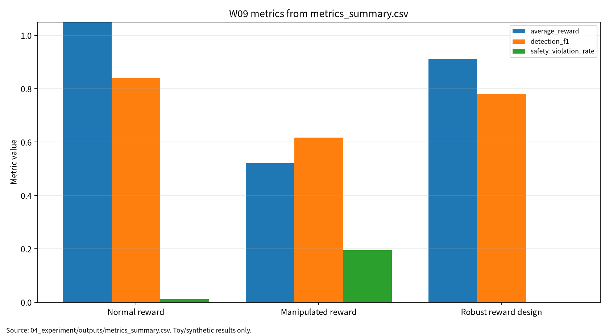

| 항목 | 내용 |
|---|---|
| 주차 | W09 |
| 작성자 | 박영세 |
| 학번 | 26200122 |
| 보고서 제목 | 심층강화학습(DRL) & 사이버보안 적용·보상조작 |
| 작성/보완일 | 2026-06-22 초안, 2026-06-23 최종 보완 |
| 문서 상태 | 제출용 보고서 |
| 관련 산출물 | 03_weekly_reports/w09_drl_cybersecurity/ |
| 실험 근거 | 04_experiment/outputs/metrics_summary.csv, results.json, run_log.md |
본 보고서는 DRL의 MDP, Q-learning, DQN, policy gradient, actor-critic, verification 개념을 사이버 방어 에이전트의 state/action/reward 설계 문제로 연결한다. 문헌 5편을 통해 DRL 원리, 안전중요 자동화, cyber-defense 적용, IDS/IPS 평가, DRL verification을 비교하고, synthetic cyber-defense state/action/reward 기반 안전 toy 실험으로 normal reward, manipulated reward, robust reward design 조건을 평가하였다. 결과는 보상조작이 true reward, Detection F1, safety를 악화시킬 수 있음을 보이나 실제 IDS/IPS 성능으로 일반화하지 않는다.
키워드: DRL, cyber defense, reward manipulation, reward misspecification, safety violation, policy robustness
DRL 기반 사이버 방어 에이전트에서는 높은 observed reward가 실제 보안성, 낮은 safety violation, 높은 robustness를 보장하지 않는다.
W09는 W01~W08에서 다룬 AI 보안 평가축을 순차 의사결정형 보안 에이전트로 확장한다. W08까지는 데이터, prompt, context, model output, tool action의 위험을 주로 다루었다면, W09는 agent가 state를 관측하고 action을 선택하며 reward를 통해 policy를 업데이트하는 구조를 다룬다. 사이버보안에서는 DRL agent가 IDS/IPS, patching, isolation, escalation 같은 자동 대응을 수행할 수 있지만, reward manipulation이나 reward misspecification이 발생하면 높은 observed reward가 실제 보안성을 의미하지 않을 수 있다.
이번 주 목표는 DQN, policy gradient, actor-critic, DRL verification의 기본 개념을 정리하고, DRL for cyber defense의 상태·행동·보상 설계 문제를 이해하며, Detection F1, safety violation rate, policy robustness를 포함한 최소 평가 프로토콜을 설계하는 것이다.
DRL은 MDP, value function, policy optimization을 통해 순차 의사결정 문제를 학습하는 접근이다[1]. W09에서는 tabular Q-learning으로 개념을 안전하게 축소해 설명하되, DQN, policy gradient, actor-critic으로 확장 가능한 평가 구조를 남겼다.
표 1. W09 핵심 개념과 보안 연결
| 개념 | 핵심 의미 | 보안 연결 |
|---|---|---|
| MDP | state, action, reward 기반 의사결정 | cyber-defense state/action/reward |
| Q-learning | TD update로 행동가치 학습 | toy policy 학습 |
| DQN | Q-function의 neural approximation | 향후 neural DRL 확장 |
| Policy gradient | policy 직접 최적화 | 자동 대응 확률 정책 |
| Actor-critic | actor와 critic 결합 | 성능/가치 평가 분리 |
| DRL verification | safety specification 검토 | reward와 safety 분리 |
안전중요 자율 시스템에서 DRL은 시뮬레이션과 실제 배포 사이의 검증 문제가 중요하다[2]. 사이버보안 DRL 연구는 IDS, cyber-physical systems, game-theoretic defense 등 다양한 적용 영역을 포함한다[3]. RL 기반 cybersecurity 연구에서는 detection rate, precision, recall, F1 등 표준 탐지 지표를 함께 보고해야 한다[4]. DRL verification 연구는 높은 reward와 safety specification 만족이 별개임을 보여준다[5].
Reward manipulation은 공격자 또는 환경 조작자가 보상 신호를 의도적으로 왜곡하는 경우다. Reward misspecification은 설계자가 실제 보안 목표를 잘못 반영한 보상함수 설계 오류다.
표 2. 관련 문헌 5편 요약
| 번호 | 문헌 | 역할 | 검증 상태 |
|---|---|---|---|
| [1] | Arulkumaran et al., Deep Reinforcement Learning: A Brief Survey | DRL 기본 원리 | 부분 검증: 로컬 PDF는 arXiv extended version |
| [2] | Kiran et al., Deep Reinforcement Learning for Autonomous Driving: A Survey | 안전중요 자동화 | 부분 검증: 로컬 PDF는 arXiv v2 |
| [3] | Nguyen and Reddi, Deep Reinforcement Learning for Cyber Security | cyber-defense DRL | 확인 필요: 강의계획서 저자명 차이 |
| [4] | Adawadkar and Kulkarni, Cyber-security and reinforcement learning -- A brief survey | IDS/IPS, IoT, IAM 지표 | 확인 필요: 강의계획서 저자명 차이 |
| [5] | Landers and Doryab, Deep Reinforcement Learning Verification: A Survey | DRL verification | 확인 필요: H. Yan et al.과 동일 여부 |
주의: W09의 P05는 강의계획서 지정 저자명 H. Yan et al.과 현재 로컬 PDF 기준 Matthew Landers; Afsaneh Doryab가 다르므로, 동일 논문 여부와 최종 ACM 출판정보를 확인 필요 상태로 유지한다.
P01은 원리, P02는 안전중요 자동화와 sim-to-real gap, P03/P04는 cyber defense와 IDS/IPS 적용, P05는 DRL verification과 safety specification을 담당한다. W09의 핵심 연결부는 “높은 observed reward가 높은 실제 보안성을 의미하지 않는다”는 점이다.
| 논문 | 차별성 | 내 논문 활용 |
|---|---|---|
| P01 | value-based, policy-based, actor-critic survey | DRL 이론 배경 |
| P02 | simulator, validation, safe RL | 자동 보안 대응의 안전성 유추 |
| P03 | cyber-defense DRL survey | 핵심 관련연구 |
| P04 | IDS/IPS, IoT, IAM RL survey | Detection F1 근거 |
| P05 | DRL verification taxonomy | safety violation, robustness 근거 |
표 3. W09 Research Track 요약
| 항목 | 내용 |
|---|---|
| 연구문제 | Reward manipulation은 DRL cyber-defense policy의 성능과 안전성에 어떤 영향을 주는가 |
| 대상 시스템 | DRL-based cyber defense agent |
| 보호 자산 | state observation, reward function, policy, response action, security logs |
| 위협 | reward signal manipulation, state observation perturbation, unsafe automated response |
| 평가 지표 | average reward, observed reward, detection F1, safety violation rate, policy robustness |
| 재현성 | seed, config, script, CSV, JSON, run log |
| 제외 범위 | 실제 시스템 침해, 실제 네트워크 공격, 개인정보, exploit 실행, 무단 스캔 |
그림 1. DRL 기반 사이버 방어 에이전트 보상조작 평가 흐름
Synthetic Cyber State
-> Q-learning Policy
-> Action Selection
-> Reward Signal
-> Policy Update
-> Evaluation
-> Reproducibility Evidence
본 실습은 실제 IDS/IPS 제품이나 실제 네트워크 트래픽 기반 DRL 학습이 아니라 W09의 핵심인 보상조작 평가축을 안전하게 설명하기 위한 최소 toy protocol이다. 따라서 synthetic cyber-defense state/action/reward 환경과 tabular Q-learning을 사용하되, 평가 구조는 이후 DQN, actor-critic, safe RL, cyber-defense agent에도 확장 가능하도록 average reward, observed reward, detection F1, safety violation rate, policy robustness, perturbed performance, reproducibility evidence로 분리하였다.
표 4. W09 실습 설계
| 항목 | 내용 |
|---|---|
| Environment | Synthetic toy cyber-defense states |
| State | alert level, asset criticality, vulnerability |
| Actions | monitor, isolate, patch, escalate |
| Algorithm | Tabular Q-learning |
| Conditions | Normal reward, manipulated reward, robust reward design |
| Train/Eval | 5000 train steps, 600 eval samples |
| Seed | 42 |
| Outputs | metrics_summary.csv, results.json, run_log.md |
표 5. W09 실습 결과
| 조건 | Average Reward | Observed Reward | Detection F1 | Safety Violation Rate | Policy Robustness |
|---|---|---|---|---|---|
| Normal reward | 1.085250 | 1.085250 | 0.840206 | 0.011667 | 0.838417 |
| Manipulated reward | 0.521167 | 0.842000 | 0.617512 | 0.195000 | 0.325000 |
| Robust reward design | 0.910833 | 0.967083 | 0.780952 | 0.000000 | 0.709583 |
이 결과는 synthetic toy cyber-defense state/action/reward simulation의 평가 형식 검증용 수치이며, 실제 IDS/IPS 제품, 실제 운영망, 실제 neural DRL policy의 보안 성능으로 일반화하지 않는다.
그림 7. W09 metrics summary chart

출처: 04_experiment/outputs/metrics_summary.csv. 이 그래프는 공개 toy/synthetic 산출물 기반이며 실제 공격 성능이나 운영 환경 성능으로 일반화하지 않는다.
AI 도구는 문헌 요약, 코드 점검, 문장 구조화, 그래프 생성 보조에 사용하였다. 모든 DOI/URL, 실험 수치, 본문 인용, 결론은 작성자가 outputs 파일과 로컬 참고문헌 검증표를 대조하여 검증한다.
표. W09 AI 도구 활용 및 검증 기록
| 항목 | 내용 |
|---|---|
| 사용 도구명 | Codex, ChatGPT 계열 도구 |
| 사용 일자 | 2026-06-23 |
| 사용 목적 | 문헌 요약 정리, 보고서 구조화, 안전한 toy/synthetic 실험 결과 표기 점검, 그래프 생성 보조, 제출 전 체크리스트 정리 |
| 주요 프롬프트 요약 | 주차별 제출 보고서 보완, 참고문헌 검증표 정리, metrics_summary.csv 기반 그래프 생성, AI 활용 고지 작성 |
| AI 산출물 반영 위치 | 07_week_submission/w09_submission_report.md, 07_week_submission/assets/w09_metric_chart.png, 05_ai_worklog/ai_disclosure_draft.md |
| 본인 수정 내용 | 주차별 문헌 상태 확인, 실험 수치와 outputs 대조, 안전 범위와 한계 문장 확인, 최종 제출 전 미확정 문헌 분리 |
| 사실관계 검증 방법 | 01_papers/paper_list.md, 01_papers/doi_check.md, 05_references/doi_index.md, 강의계획서 문헌표 대조 |
| 참고문헌 검증 방법 | 제목, 저자, 연도, 학술지/학회, DOI/URL, 본문 인용번호와 참고문헌 목록 대응 확인 |
| 실험결과 검증 방법 | 04_experiment/outputs/metrics_summary.csv, results.json, run_log.md의 수치와 보고서 표기 대조 |
| 최종 책임 확인 | AI 산출물은 초안 보조이며 최종 제출자는 원고 내용, 인용, 실험결과, 연구윤리 책임을 확인한다. |
추천 주제는 “DRL 기반 사이버 방어 에이전트의 보상조작 위협과 안전성 평가 프레임워크”이다. W09의 기여 후보는 reward integrity 위협모형, Detection F1/Safety Violation/Policy Robustness 평가표, seed/config/output 기반 재현성 구조이다.
표 6. KCI 논문 제목 후보
| 번호 | 국문 제목 후보 | 영문 제목 후보 | 예상 기여 |
|---|---|---|---|
| 1 | DRL 기반 사이버 방어 에이전트의 보상조작 위협과 안전성 평가 프레임워크 연구 | A Safety Evaluation Framework for Reward Manipulation Threats in DRL-Based Cyber Defense Agents | reward integrity·safety 평가표 |
| 2 | 강화학습 기반 자동 보안 대응에서 보상함수 설계와 안전 위반율의 관계 분석 | An Analysis of Reward Design and Safety Violation Rate in Reinforcement Learning-Based Automated Security Response | reward-safety trade-off 분석 |
| 3 | 사이버보안 DRL 정책의 Detection F1, Safety Violation, Policy Robustness 통합 평가 연구 | A Multi-Metric Evaluation of Detection F1, Safety Violation, and Policy Robustness in Cybersecurity DRL Policies | 다중지표 평가 프로토콜 |
추천 제목은 “DRL 기반 사이버 방어 에이전트의 보상조작 위협과 안전성 평가 프레임워크 연구”이다. 국문초록은 reward manipulation이 정책 성능과 안전성에 미치는 영향을 다중지표로 평가하고, 실제 공격/운영망 데이터 없이 synthetic toy protocol로 재현 가능한 보고 구조를 제시하는 방향이 적절하다. 국내 참고문헌 3편 이상은 아직 확인 필요다.
SCI 제목 후보는 “A Multi-Metric Safety Evaluation Framework for Reward Manipulation in DRL-Based Cyber Defense Agents”이다.
표 7. SCI Related Work 축
| 연구축 | 대표 논문 | 역할 |
|---|---|---|
| DRL fundamentals | Arulkumaran et al. | MDP, Q-learning, DQN, policy gradient, actor-critic |
| Safety-critical DRL automation | Kiran et al. | safe RL, validation, sim-to-real risk |
| DRL for cybersecurity | Nguyen and Reddi | cyber defense, IDS, game-theoretic defense |
| RL for cybersecurity applications | Adawadkar and Kulkarni | IDS/IPS, IoT, IAM, standard metrics |
| DRL verification | Landers and Doryab 또는 강의계획서 P05 | safety specification, robustness, policy verification |
Structured abstract는 Background, Problem, Method, Results, Contribution, Implications로 구성한다. 핵심 contribution은 true reward, observed reward, detection F1, safety violation rate, policy robustness, perturbed performance, reproducibility evidence를 분리하는 multi-metric evaluation structure이다. 한계는 tabular Q-learning, synthetic toy state, 단순화된 safety violation rule, P03/P04/P05 저자명 검증 필요성이다.
| 번호 | 참고문헌 | DOI/URL | 상태 |
|---|---|---|---|
| [1] | Arulkumaran et al., Deep Reinforcement Learning: A Brief Survey, IEEE Signal Processing Magazine, 34(6), 26-38, 2017 | https://doi.org/10.1109/MSP.2017.2743240 | 부분 검증 |
| [2] | Kiran et al., Deep Reinforcement Learning for Autonomous Driving: A Survey, IEEE TITS, 23(6), 4909-4926, 2022 | https://doi.org/10.1109/TITS.2021.3054625 | 부분 검증 |
| [3] | Nguyen and Reddi, Deep Reinforcement Learning for Cyber Security, IEEE TNNLS, 34(8), 3779-3795, 2023 | https://doi.org/10.1109/TNNLS.2021.3121870 | 확인 필요 |
| [4] | Adawadkar and Kulkarni, Cyber-security and reinforcement learning -- A brief survey, Engineering Applications of Artificial Intelligence, 114, Article 105116, 2022 | https://doi.org/10.1016/j.engappai.2022.105116 | 확인 필요 |
| [5] | Landers and Doryab, Deep Reinforcement Learning Verification: A Survey, ACM Computing Surveys, 55(14s), Article 330, 31 pages, 2023 | https://doi.org/10.1145/3596444 | 확인 필요 |
PDF 보관 정책 점검 결과, 01_papers/pdf/의 논문 PDF 원문은 로컬 파일로 보존하되 Git 추적은 해제했다. public GitHub 저장소에는 출판사 PDF 원문 대신 DOI/URL, 서지정보, 요약만 남기는 정책을 적용한다.
| 점검 항목 | 상태 | 비고 |
|---|---|---|
| 1장 한 문장 요약 작성 | 완료 | |
| 2장 학습 배경과 주차 목표 작성 | 완료 | |
| AI 원리 70% 정리 | 완료 | |
| 보안 이슈 30% 정리 | 완료 | |
| 논문 5편 요약 | 완료 | |
| 논문 5편 비교표 보완 | 완료 / 확인 필요 | P05 동일 여부 반영 |
| Research Track 5요소 작성 | 완료 | 연구문제, 위협모형, 평가방법, 재현성, 오픈문제 |
| P01 DOI/URL 검증 | 완료 | arXiv extended version 메모 |
| P02 DOI/URL 검증 | 완료 | arXiv v2/출판판 차이 메모 |
| P03 DOI/URL 검증 | 완료 / 확인 필요 | 저자명 표기 차이 확인 |
| P04 DOI/URL 검증 | 완료 / 확인 필요 | 저자명 표기 차이 확인 |
| P05 지정 논문 동일 여부 검증 | 확인 필요 | H. Yan et al. vs Landers/Doryab |
| 실험 outputs 파일 존재 확인 | 완료 | |
| 실험 결과와 보고서 수치 일치 | 완료 | |
| KCI 논문 형식 전환 작성 | 완료 | |
| SCI 논문 형식 전환 작성 | 완료 | |
| 본문 인용과 참고문헌 대응 | 완료 / 확인 필요 | P03/P04/P05 표기 차이 |
| 표·그림 번호 정리 | 완료 | |
| AI 활용 고지 작성 | 완료 | |
| PDF 저작권 위험 점검 | 완료 / 확인 필요 | PDF 원문 추적 중 |
| 최종 사람이 검토할 항목 표시 | 완료 |